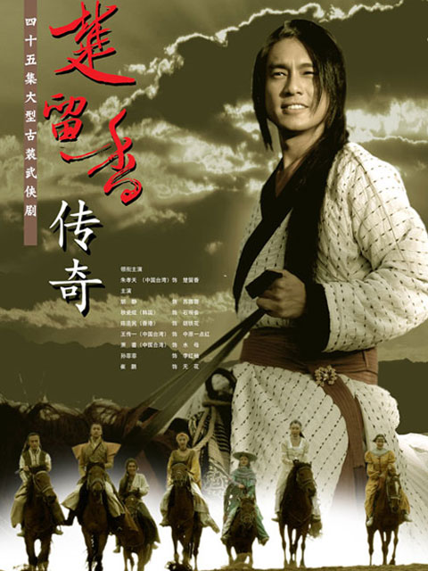
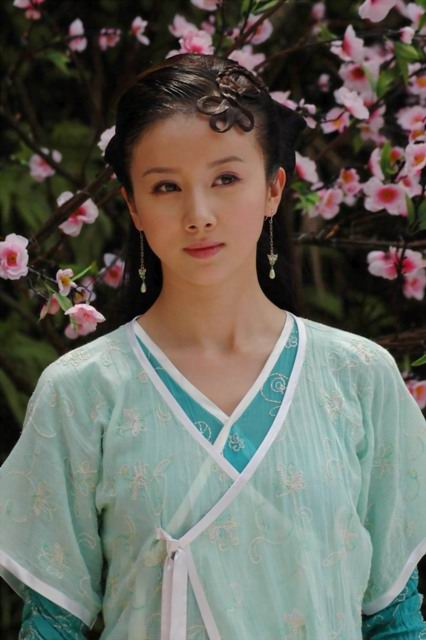
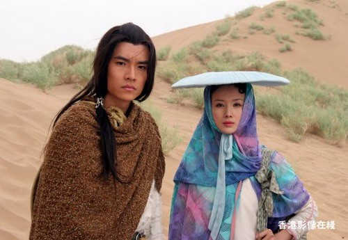
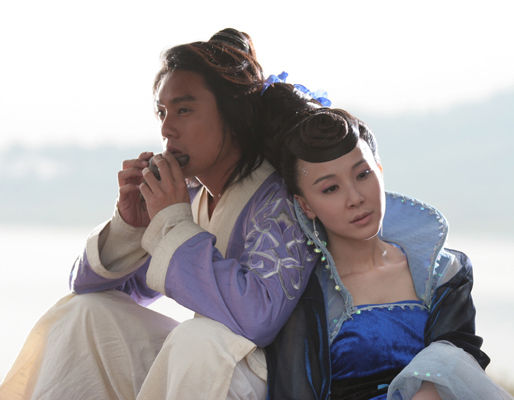

2014/05/03
金庸和古龙，这是两位不太一样的武侠小说集大成者。如果让我在金庸和古龙之间做个选择的话，那我肯定会选古龙，不是说金庸的小说写的不够好，而是古龙更符合我个人的偏好(还有就是他是江西南昌人，也算是我的老乡了)。作个可能不太恰当的比喻，如果说金庸好比欧拉(Euler)，稳如泰山，运筹帷幄; 那么古龙则更像高斯(Gauss)，经常带给人意外的惊喜。金庸的小说与古龙相比，或许真的更显得平淡一些，少了那种说不出来的，只能在古龙的作品中才能找到的味道。从小到大，看过很多他们的作品改变的电视剧，自然都很喜欢，这也是我一直到现在保持不变的爱好之一。不过，若要让我给出我最喜欢的一部电视剧，那么我会毫不犹豫的说是：楚留香传奇，因为我觉得只有楚留香才有真正的侠之大者的那种味道。
高中的时候好像也看过任贤齐版的楚留香传奇，印象比较深刻。还记得那是在莲一中的时候，读高一那年，那时候我哥他们还没毕业，我和他们住在一起。有时候周末没事的时候回去教室里面蹭电视看，因为租房的地方没有电视。其中，有一个晚上，就是在我二哥的教室里面看任贤齐版的电视剧，这也是我记忆中所能搜寻到的最早的关于它的记忆了。当时也只是看了一些片段，根本没有完全看完。
后来，到了高三，我哥他们高中毕业了，我就一个人过着从学校到住的地方的两点一线的生活。正在这个时候，有电视台新拍了一部朱孝天版的楚留香传奇。没事的时候，我也会看看，但是每次只能看到一些不完整的片段，因为中午要午休，而晚饭时间又比较短。于是，同样的事情又出现了，我还是没能在高中毕业之前看完这部电视剧。后来上了大学，尤其是大二、大三的时候，晚上没事的时候喜欢找一些以前没看完的电视剧或者电影来看。其中就包括朱孝天版的楚留香传奇。很多人都说朱演得不好，因为他根本就长得不帅，甚至是难看，更何况当时他长得比较胖，于是有人笑说是 "猪孝天"(希望我这句话没有构成对他的诽谤)。但是其实我的观点正好相反，道理很简单，因为我非常同意杨澜说过的一句话：一个男人的帅不在脸蛋上，而是在于岁月在他身上积淀出来的那份淡定与睿智
。一般人可能会觉得大侠自然应该都是长得很帅的，比如像小李飞刀李寻欢那样。但是，我觉得这只是对大侠
这两个字的很肤浅的理解。就好比像杨过那样，虽然只有一条胳膊，但是并不妨碍他成为大侠。可是如果杨过生活在现在的社会中，恐怕很多人都会看不起他，更不会有人愿意选择和他过一辈子(尤其是，如果他的武功不能用来赚钱养家的话，那以现在人的眼光来看，他就更加一无是处了)。这也许就是为什么，我们现实生活中经常缺乏乐趣之处了吧。
我想说的其实是，大侠不一定非要长得帅，但是那种超然洒脱的风度、那种放浪形骸的从容、以及那种路见不平勇于献身的责任感却是必不可少的。并且我以为，楚留香这个角色，确实具备了这些特征，但似乎又不仅限于此。因为似乎很难找到比到精准的词汇来形容他在我心中的形象。与大众的观点相反，我觉得朱孝天版的楚留香是目前来看最成功的，因为朱身上确实有那种大侠云游四方，不断挑战新问题、解决新问题，同时又能保持足够的从容与乐观的心态，并且早已经不把生死看得太过重要了。我觉得每个人如果能做到这些，那么他/她 才是一个纯粹的人，一个不受现实琐碎之事所羁绊的人。可惜现实生活，有很多客观问题需要面对和解决，而这些问题正好在武侠世界和现实世界之间划上了一道鸿沟。它可以逾越，但是你得知道你是否能够接受这其中的代价。
说到楚留香，如果不提另外一个人，那么整个故事将会显得非常乏味，这个人就是楚留香的好朋友，同时也是他的死对头，那就是无花。其实无花只是他的法号，至于他的真名，大概只能知道他姓龙泽，因为他父亲是东瀛武士，名叫龙泽一郎。除了无花之外，还有很多值得一说的人物，包括无花的妹妹李红袖，这个角色在朱孝天版中是由孙菲菲饰演的，我个人很喜欢她扮演的李红袖这个角色。还有就是胡铁花，一个酒鬼，而且常年不洗澡，但是很讲义气。还有苏蓉蓉，剧中最后和楚留香走到一起的就是她，她是月亮城的公主(但是小说中似乎是另外一个人，剧中把两个角色合并了)。最后，还有琳琅，也就是石观音，楚留香曾经喜欢过她，可是最终逃不过命运，两个人最终还是没能走到一起。这也说明了，人与人之间的信任或者说缘分很重要。还有宋甜儿，她虽然从小就跟着楚留香一起行走江湖，但是楚留香只是把她当成妹妹一样，她最后和胡铁花走到了一起。还有一些边缘人物，但是剧情确实必不可少的，比如水母阴姬、柳无眉等。
就从我最喜欢的角色，李红袖开始讲起吧。一直以来，楚留香都不知道李红袖是个女人，虽然他曾经多次怀疑过，因为李红袖的声音、身材、没有喉结等原因，但是因为他们是好朋友，所以楚也不喜欢去深究这个问题，作为朋友，就应该相信他(或者更准确一点，应该是她)。可是另一边，李红袖似乎很早就对楚心生爱慕之意了。我突然想起了当无花告诉李红袖楚留香为了就秋灵素而跳崖之后，李红袖所表现出来的那种绝望的哀嚎：“哥，他还不知道我是女人，他还不知道我是那么的喜欢他，他怎么可以就这么轻易的就死了？！我的感情还没有开始，就已经结束了，哥，你明白吗？..." 这个时候的李红袖的反应，就连向来木讷的中原一点红都看出来了：“李帮主的那种表情不像是朋友之间的那种，倒更像是一个女人突然之间失去了自己最心爱的人一样”。中原一点红说的一点没错，李红袖当时头发散落开来，脸上充满了绝望，这种表情还能是什么呢？ 可惜，命运弄人，尽管最后楚留香确实知道了李红袖是女人，他们最终没能在一起。记得李红袖还在丐帮担任帮主时，楚曾经还戏谑说：“你要是个女的，我将来肯定娶你，可惜你是个男的，但是你有时候却比女人还女人。” 说者无心，听者有意，但是又能怎样呢，谁也无法摆脱宿命，不可强求。
也许，从一开始李红袖就注定了要背负他父亲的遗训而活着，而这就注定了她的人生会是个悲剧，包括她的感情。无花作为她的哥哥，更是如此。可是事实上，红袖根本无心想要像他父亲那样，统一中原武林，独霸武林。她想要的不比一个普通的女人多，也不比一个普通女人少。可是，每个人都有权利选择去过怎样的生活，上一代人为何要将自己的意志强加在自己子女的身上，在大多数情况下，这不是一种期待，而是一种残害！ 平心而论，龙泽一郎是一个典型的野心家，他最初携带家倦踏上中土之时，惟一的目的就是想要学习中土武功，一边统一中原武林，成为王者。可是，中国人从古至今，都对日本/东瀛印象不够好。当龙泽一郎拖家带口，来到中原求学武功时，却遭到了中原武林人士的鄙夷：“非我族类，怎配学我中土武功！“，这是前任丐帮帮主仁慈对龙泽一郎所说的，仁慈也算是李红袖的义父了。和大多数日本人的性格一样，龙泽一郎可谓愈挫愈勇。他不光偷学各大门派的武功，还竟敢公然向他们发起挑战书。最终，龙泽一郎虽然武功高，但是也难以胜过中原武林各大高手，更何况他们当时采用的是车轮战。最终龙泽一郎死于这些中原八大门派掌门人的车轮战之中，其中包括李红袖的义父，丐帮帮主仁慈。龙泽一郎死后，她的妻子剖腹自尽，剩下李红袖兄妹二人，加上他们的姐姐：石观音(龙泽一郎偷学武功时收养的)。可是龙泽一郎虽然死了，他对这三个孩子的一生的影响却才刚刚开始：他们决定要为父亲报仇，杀光这些所谓的中原武林正派人士。就这样，这三个孩子开始了他们的长远的复仇计划。
龙泽一郎死后，年纪稍长一点的石观音这个时候心机就已经很重了。她故意把红袖托付给仁慈来抚养，然后等若干年之后再被让他亲手养大的红袖来复仇，取了他的性命。仁慈由于心中一直对于龙泽一郎的死感到很内疚于是决定收养红袖。他把红袖养大，可是红袖最后却不得不用毒药来杀死自己的义父。尽管仁慈其实知道自己中了红袖的毒，由于始终对龙泽一郎心存内疚，早已经作好了死在红袖手里的准备了。不仅如此，仁慈还在死前将丐帮帮主的位置传给了红袖。可是她是个女人，为了担当这一切，她就不得不伪装成男人，尽管她已经有了很高的武功。石观音不光把红袖交给仁慈，还把无花交给了少林寺方丈，于是无花才叫无花。无花在少林期间，刻苦钻研他父亲留下来的东瀛武功秘籍，其中包括所谓的“迎风一刀斩”、“死卷术”等东瀛忍术。可是，这一切后来都被证明不足以胜过楚留香。
最后，在剧中李红袖莫名其妙地和中原一点红走到了一起。或许真的对于一个女人来说，选择自己爱的人不如选择爱自己的人。让我们来说说中原一点红(一下简称“一点红”)吧。他和楚留香差不多，从小就是孤儿是被师傅养大的。所以他和师傅一样，一心追求的是武学和剑法的最高境界，是一个典型的武痴。一点红以职业杀手著称，一生杀人无数，也因此而内心变得非常冷漠，不稀罕与人交往，唯独楚留香很令他感兴趣，因为楚是他在武学上的一个劲敌。但是，他们二人的关系从最初的敌人变成了最后的好朋友，所谓不打不相识。楚的武功在所有人中是最高的，而无花和一点红功夫相当，不相上下。一点红第一次见到楚留香就知道是他了：试问普天之下除了楚留香还会有谁在被别人用剑架在脖子上的时候还能够谈笑风生的？ 按照楚留香的话来说，一点红确实是一个缺乏情趣的人，但是一点红却绝对是一个靠得住的，所以红袖选择了他或许是一个好的归宿。
很显然，楚留香虽然确实是为了救秋灵素和她一起跳下悬崖了，但是凭借他绝世无双的轻功，即便悬崖又能怎样？楚不光功夫高，而且是一个很有武德的人，因为他不用兵器，只用一把折扇，而且赢了别人之后不会杀了对方，而会把他们放了。他在剧中说过一句话，我直到现在还记得：“没有一个人有权利结束其他任何人的生命，虽然你们现在不这么想，但是我相信以后有这种想法的人会越来越多的。” 从这句话我们可以看出，楚留香这个观点已经超越了时代，不光超越了武侠的时代，更是超越了古龙所出的那个时代。我非常认同这个观点，哪怕一个人犯了杀人罪，我们也没有权力去剥夺他的生命，因为他存在这个世界上就是一种缘分，自有它的道理。像西方那样，我们只能将他终生监禁起来，却不能判他死刑。可惜的是，我们的国家现在还未废除死刑，所以说我国的法治和人权发展还有很长的路需要走。
楚留香有外号叫：“香帅“，”盗帅“等，这是因为他经常劫富济贫，整个故事就是这么展开的。最初楚留香来到客栈，就是为了骗取鱼尺素的心，然后进一步骗取她的钱来给穷人。可是后来鱼尺素竟然真的喜欢上了楚留香假扮的阿呆，楚留香也不忍心让她伤心，不想欺骗她。可是就在楚想要把自己的真正目的告诉鱼尺素的时候，却发生了一件离奇的杀人事件。七星帮帮主左又铮，朱砂帮帮主西门千，沙漠之王扎木合，这三位在当时可谓一等一的高手同时死在了客栈。除了他们之外，鱼尺素也被杀了，其实整件事情跟她没有任何关系，她只是被牵连了。此外，还包括客栈的一些伙计也死了。一时之间死了这么多人，简直让人毛骨悚然，楚留香意识到有大事要发生了。
后来，经多神水宫的人，加上楚的推断，这三位高手应该是死于天一神水
中毒。可是天一神水从不轻易落入神水宫之外的人之手，凶手究竟是如何做到这一点的呢？ 这一切让楚留香百思不得其解。后来随着剧情的发展，线索越来越多了。其中比较重要的就是在见秋灵素的时候，无花以东瀛武士的身份试图阻止楚留香前去见秋灵素，过程中他们难免交手，可是无花未能敌过楚留香，被他撤下面纱，但是好在躲闪的快，未能被楚看到自己的真面目。“东瀛武士”的出现看似是把整件事情搞得更加离奇了，实际上正好相反，真相已经在逐步向他靠近了，因为中原武林有名的东瀛人并不多，其中就包括十多年前的龙泽一郎。这么看来，无花的这招棋其实是过早的暴露了自己的身份。当然，整件事情主要还是因为李红袖才出现转机的。当红袖听说楚留香跳崖之后陷入绝望之中，在客栈像疯子一样杀了很多人。作为丐帮帮主，这种行为必然给红袖找来极大的麻烦。后来各大门派声讨李红袖，李红袖寡不敌众，先是楚留香出手相救，再后来无花出现并把她带走了。
无疑，红袖杀人事件直接导致了她们兄妹三人的复仇计划，乃至最终的独霸武林计划过早的暴露了。因为任何人都知道，红袖与东瀛武士有密切的关系。经过走访各大门派的掌门人，楚留香终于把整件事情的来龙去脉搞清楚了。可是他实在不敢相信，自己的两个最要好的朋友：红袖和无花，竟然才是整件事情的凶手，这一切让他难以接受，可是他又不得不接受。后来，楚留香和无花在大明湖畔不得不从朋友变为敌人。最终无花喝下了天一神水
假死了。因为那是个阴阳壶，无花喝得是另一个隔间的酒，可是楚留香一直以为无花已经死了。楚留香只知道无花和红袖是兄妹关系，却不曾知道，她们背后还有石观音在，她才是整个计划的幕后操纵者。无花虽然逃过一劫，可是他的野心却一点都没有收敛。
后来无花和红袖都被石观音就走了，他们去了大沙漠。由于第一计划受挫，他们三人决定先在沙漠发展势力，等强大之后在进军中原武林，从而一举歼灭中原各大门派。如果没有出留香的话这个计划或许真的能够实现，可是如果这样，那么整个故事就显得很单调乏味了。
天一神水杀人事件终于告一段落了，楚留香又可以继续他的逍遥生活了。他和宋甜儿来到了大沙漠，将与无花再次狭路相逢。我非常喜欢大沙漠里面那种空旷雄浑的视线，漫天黄沙同时又让人感到一种难以名状的沧桑感，仿佛在诉说着只属于沙漠居民自己在长期与大自然作斗争的生存故事。棕黄色的沙漠，让人潜意识里觉得这是一个并不缺乏悲壮故事的地方。如果有机会的话，我以后一定要去亲眼看看沙漠，感受一下那种萧条与肃杀，感受一下沙漠人的生活方式。
在大沙漠时期发生的事情比较多，我的记忆不是非常清晰了。印象较深刻的是胡铁花，他长期生活在大沙漠，和楚留香再次见面自然是非常开心。还有沙漠之王，也就是苏蓉蓉的哥哥。他表面上看上去是一个沉迷酒色的混君，其实确实一个伟大的军事战略家。他这么做只是为了迷惑对方，因为他发现自己身边有卧底。其实另一边，他已经在悄悄地砺兵秣马了，就连他的妹妹苏蓉蓉也不知道这一切。
在大沙漠时期，主要的剧情都是围绕着琳琅和楚留香两个人展开的。琳琅就是石观音的真名，当年秋灵素是天下第一美女，而琳琅紧跟在秋灵素之后。生性好强的琳琅找到秋灵素，威胁她自己动手毁容，否则就将她杀了。毕竟性命比容貌重要，秋灵素选择了自己毁容。但是在毁容之前，她找到了当时最有名的画师：孙学甫 来帮她画像，为的是将她美好的容貌永远的保留下来。孙学甫为秋灵素一共画了三副画像，之后秋灵素把孙学甫的眼睛弄瞎了，为的是不让他再为别的女人画像。或许真如俗话所说的：女人之间的嫉妒才是最可怕的！孙学甫从此再也不能作画了。秋灵素之所以画三副画像就是为了分别送给三个情人：七星帮帮主左又铮，朱砂帮帮主西门千，沙漠之王扎木合，以便让他们永远记住自己的容貌。毁容之后，丐帮帮主仁慈处于同情，将秋灵素娶回了家，所以秋灵素才会对红袖和无花的复仇计划很了解。
虽然琳琅和楚留香一开始相互吸引，但是感情终究敌不过一次次的误解和欺骗。最终因为楚留香，琳琅放弃了复仇计划，出家为尼。不仅如此，琳琅的这个选择让从小在她复仇计划灌输下的无花突然感到失去了精神支撑，他到底该不该继续自己的复仇计划？ 无花选择了继续自己的复仇计划，即便没有阿姐的帮助！这也说明了，无花其实已经渐渐地在潜意识里面将复仇计划转化成了自己个人的野心了。
整个故事中最有手段的应该数柳无眉了，她虽然武功不高，但是心计之高，无人能比得上。在画眉鸟一段，她试图坐上神水宫宫主的位置，修炼神水宝典来治好自己的癫痫病。可是，这一切其实只不过是水母阴姬所布下的一个局而已，所有人都被她所掌控着。其实水母阴姬根本就没有女儿，之所以要上演一出找女儿的假戏，其实是为了瞄准了楚留香作为接班人，当然，是借助苏蓉蓉来间接达到这个目的的。水母阴姬当初之所以要创立神水宫是因为自己一段不好的感情经历。平凡，也就是一点红的师傅，因为长得像无崖子，所以阴姬选择了他。但是在一次杀手任务中，平凡身受重伤不能坚持见到阴姬最后一面。可惜的是，阴姬却以为平凡把自己抛弃了，于是她创立神水宫来为同样受害的女人维护公道。可是她到最后才知道平凡其实就在神水宫的山脚下，并且早已经死了。她瞬间才意识到自己原来错怪了平凡十多年。只是斯人已逝，再也难以挽回，想到这里不禁令人唏嘘。生死其实对于阴姬来说早已不再重要了，至少以认识了宋甜儿，虽然甜儿不是她的女儿，但是阴姬非常喜欢甜儿的个性，并且最终让甜儿和胡铁花一起管理神水宫。这对于阴姬来说，也是再好不过的结果了。最后阴姬在楚留香的埙声中安然地走了。
阴姬虽然死了，但是柳无眉和无花的阴谋同时也被揭穿了，无花再次失败了。最后柳无眉死了，宫南燕陪在无花身边照顾又瞎又瘸的无花，无花的武功也尽废了。这种时候也许才是真正考验一个人是否真心的时候。无花在最后终于意识到，一切的争名夺利不过是一场空，反倒让自己成了一个废人。不过，不管怎么样，知错能改，善莫大焉。
整个故事到这里差不多该讲完了，最后楚留香回到了香榭，最终陪楚留香到最后的竟然是苏蓉蓉，红袖终究只能添香。